The tourReal pictures
A walk round the desktop.
In the order you would meet it: the ring first, then the panels that open in the middle of it, then the places where things are set. Every picture comes from Trindle itself.
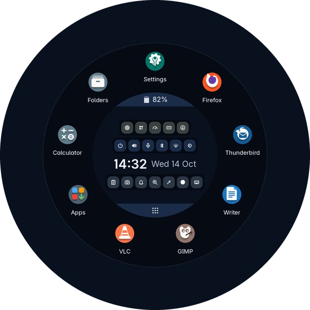
The ring in the picture is drawn by the ring's own code.
The ring
Push the pointer against any edge of the screen and double click. The ring appears.
The middle
Round the middle
Up to twelve favourites. Click one to start it, or to bring its window to the front. Drag one onto another's place to reorder them. Outside them, every open window is a tab along the bottom of an outer ring.
Mouse-first, keyboard second, and a finger does just as well
A hand on a mouse
The ring holds the apps, the clock and the tray, and a quick panel opens in the same circle, not in a window somewhere else. Nothing is more than a short move away, and nothing has to be typed.
Nothing to memorise
Other desktops ask you to learn key combinations first. Trindle asks for none. The shortcuts here are only faster routes to things the pointer already does.
A finger works too
Large round targets, 32-pixel window buttons and full-width rows in Settings. Programs that leave the title bar to Trindle get a line to put the window away, a square to fill the screen and a cross to close it.
All apps
Click the All apps band at the foot of the middle and every app that is not already a favourite appears round the outside, cut into pieces by kind: Internet, Office, Graphics, Sound and video, Games and so on. A kind with nothing left in it has no piece. Click All apps again to put them away.
Or just type while the ring is open. What you type shows in the middle where the time was, and the apps whose names start with it appear in one ring. Names of fewer words come first, so fo finds Folders before Font Viewer.
Power
Click Power in the middle of the ring and two rows of choices cover it. Stepping away: Lock, Screensaver, Suspend and, where the computer can, Hibernate. Leaving: Log out, Restart and Shut down. Lock and Screensaver happen at once. The others ask twice: the first click fills the button with the highlight colour and shows a tick, and the second does it. The cross goes back.
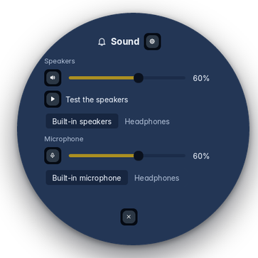
Quick panels
Click a round button in the middle of the ring, or the battery band along the top, and a round panel opens over the favourites, in the same circle rather than in a window somewhere else. The gear in it opens the full Settings page; the cross closes it. The clipboard and notifications open the same way.
Sound
Volume, the microphone, and which speakers or headphones are in use.
Wi-Fi
The networks in range, and Connect. A network you have joined before connects by itself.
Bluetooth
Search, then Pair beside your headphones, mouse or keyboard when it appears.
Battery
How long it will last, and how worn it is. A warning appears once when it runs down to the level you chose.
Open windows are tabs round the ring
Nothing sits at the edge of the screen. Each open window is a tab along the bottom of the outer ring, and the tabs grow round to the left and right as you open more.
A tab shows the program's icon, with its name under it where there is room, and the window in front has a quiet grey dot. Windows of one program sit side by side. Right-click a tab for round buttons to restore or minimise, maximise or restore the size, close, and add its program to your favourites.
What the ring does with windows
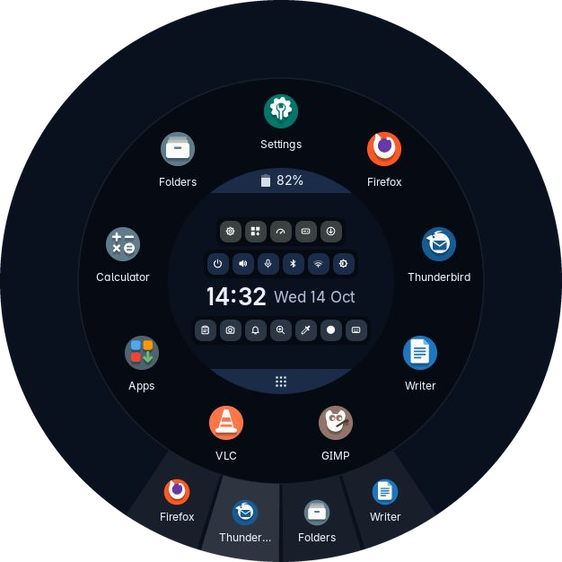
Open windows, as tabs along the bottom of the ring.
Notifications pop out as circles
When a program has something to tell you, an email arrived or a download finished, a circle pops out in the corner of the screen you chose and goes again after a few seconds. It holds most of the message and has round buttons to close it, pin it or snooze it. Point at it and it grows to hold the whole message. When two or more are out, a button clears them all.
The notifications button in the middle of the ring opens everything that has been said, newest first, with the time beside each. Pin the ones worth keeping and they gather at the top. The bin beside one forgets it, and the bin at the foot of the list forgets the rest, once you click it a second time.
Quiet when you want it
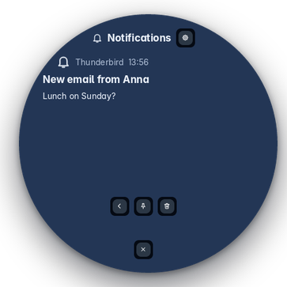
One notification, shown whole in the middle of the ring.
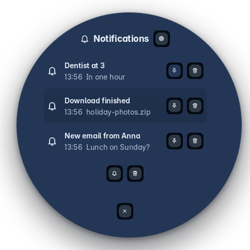
The list the notifications button opens.
The clipboard remembers
The clipboard button in the middle of the ring opens a panel there of what you copied lately, newest first, with a filter box to find one.
- Click a line and it goes back on the clipboard and nowhere else, and the ring closes. You paste it yourself, so nothing lands in a box you did not choose.
- Pin the lines worth keeping; they stay at the top.
- The bin beside a line forgets that one, which is what you want for a password copied by mistake. The bin at the foot forgets the rest, once you click it a second time.
When the rest is forgotten
Settings, Ring, Clipboard chooses one of these. Pinned lines are kept whichever you pick.
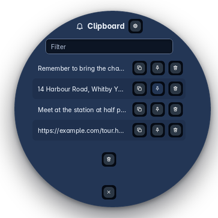
The clipboard list, newest first.
Screenshots you can draw on
Screenshot is an app of its own. Press Print, or Super, Shift and S on a keyboard with no Print key, or press the camera button in the middle of the ring.
The screen holds still. Drag across the part you want, or press the round button for the whole screen, or the cross to change your mind. The part can then be moved, and made bigger or smaller by its corners and edges, and a small card of tools opens beside it.
Shift and Print skips all of that and keeps the whole screen at once, saved and copied. When it is saved or copied, the word Done shows for a moment.
The card beside it
Folders
Folders is Trindle's own file manager, and it starts among the favourites in the ring. It opens network shares, phones and cameras, and its right-click menu can extract and compress archives and compare two files or folders. A file's Properties show its checksums.
Drives
Drives is a window of its own, with a button in the middle of the ring, or from Settings, About this computer. One sentence at the top says how things are, and each drive has a card: how full each part of it is, and how healthy the drive is where it can say.
Starting and stopping
From the boot menu to the login screen and back again, there is always something on the screen, and it is always the same thing.
Never a black screen
The Trindle mark is on a dark screen from the moment the boot menu starts, and turns in the middle while the computer starts, until the login screen or the desktop has finished drawing. No lines of text, no blinking cursor, no black gap while one part hands over to the next.
The same turning mark covers the moment between the login screen and the desktop, and turns while the computer shuts down or restarts. While the desktop comes up, "One moment, please" says it has not stopped.
Start-up times
Every start of an installed computer is timed, from the power button to the login screen, using the firmware's own record of its part. Settings, About this computer, lists the last ten with their date and time, and saves the whole list to Downloads.
Time spent typing the disk password is left out, so the number is the computer's, not yours. Starts from a USB stick are not timed: that would mostly be timing the stick.
The disk password
On a disk locked with a password, the box has an eye, like every other password box, to show what you typed. It can be clicked with a mouse, a touchpad or a finger. Tab does the same, for a computer where the mouse is not working yet.
The password is typed on the keyboard layout you chose when you installed, so the letters are where you expect them, and the screen says in a few keys how to work it.
The boot menu stays out of the way
With only Trindle on the computer there is nothing to choose, so the boot menu is not shown. Press Esc while the computer starts and it appears.
With Windows or another Linux beside it, the menu is there each time, so you can pick. The computer's own list of what it can start calls it Trindle.
Starting: the mark turning, under the computer maker's logo where it has one.
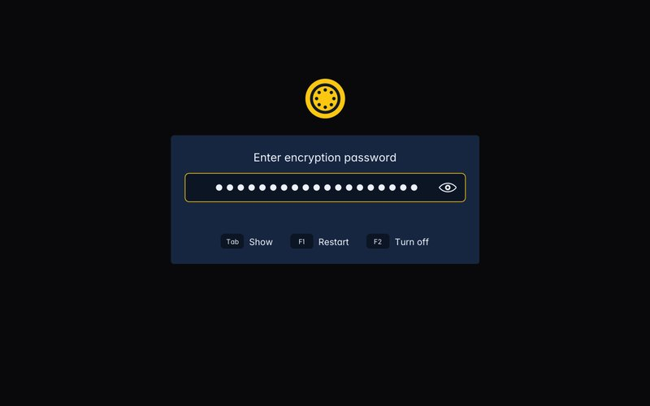
The disk password, with the eye.
When you walk away
Left alone for a while, the screen goes dark with only the time on it, drifting slowly about. Any key or movement brings everything back. The screensaver is also in the ring, under Power, for when you want it now.
Locking has its own time, whatever the screen and sleep times are. When it locks, it rests the same way, the clock carrying on from the screensaver, until you come back and the PIN or the password appears. The desktop never shows in between: not your windows, not your email, not what you were reading.
Settings, power, locking
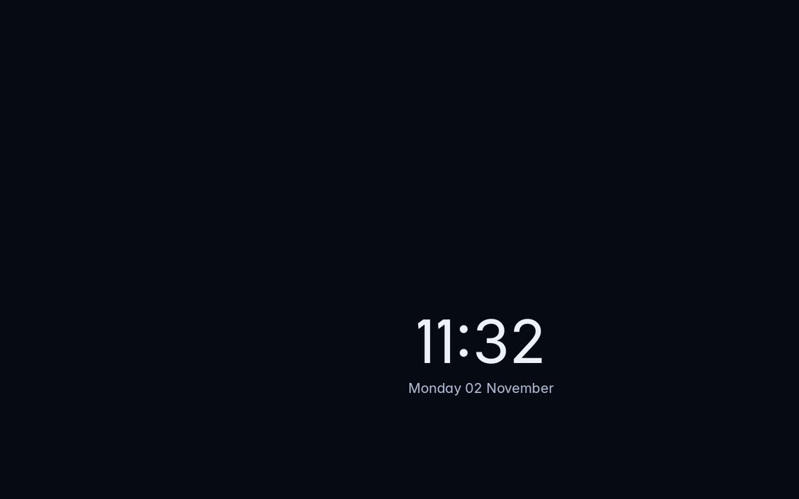
The screensaver.
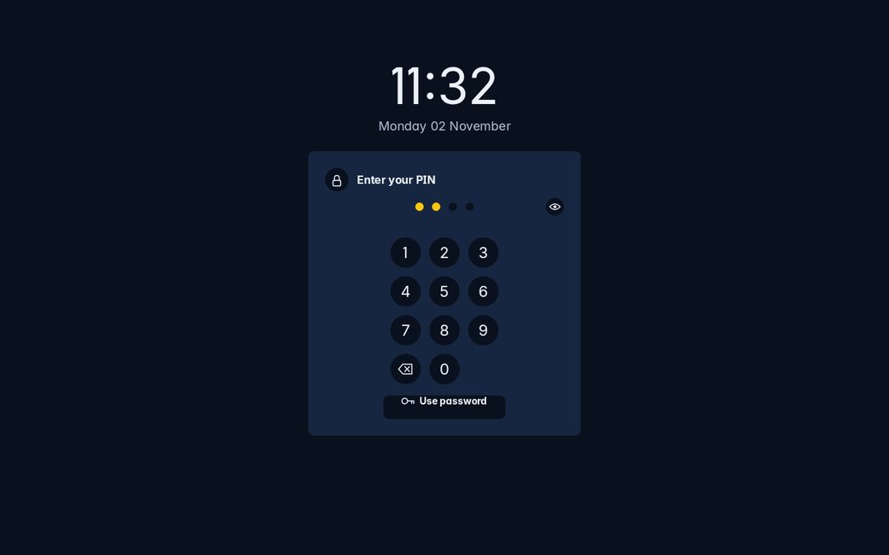
The lock screen, asking for the PIN.
Settings
One window, a list of pages down the side. Super and I opens it, and so does its place in the ring.
The screen and the machine
- Displays, the size everything is drawn at, and night light
- Sound, with a test chime and a level bar
- Network, Tailscale, Blocking and Bluetooth
- Power: dimming, the screensaver, locking, sleep and the lid
- Network printers, found without any help
How it looks and behaves
- A built-in wallpaper switcher: one picture, a folder that changes, or a plain colour you type as a hex code
- Appearance: a theme, light or dark, highlight colour, round or square icons, font, and pointer size
- Ring: how it opens, the favourites, notifications and clipboard
- Sounds for logging in, the charger and the battery
- Keyboard and mouse, region, date and time
- Which app opens what, and what starts at login
People and safety
- Users, passwords and the picture at the login screen
- Snapshots: take one, restore one
- About this computer: its name, what it is made of, and ways into Activity, which shows what it is doing right now, and Drives, a window of its own for the drives and USB sticks
- Thanks: the projects Trindle is built on
- Help: the same plain wording as this site, offline
Keyboard and mouse
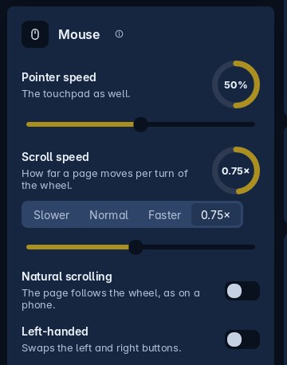
How fast the pointer and scrolling go, which way scrolling moves the page, and the buttons swapped for the left hand. On a laptop, the touchpad too: tap to click, and the touchpad off while you type. Each change works straight away.
On a laptop
Dimming, the moving clock, the screen going off and sleeping each have a time on the battery and a time plugged in, switched over as the charger goes in or out. Closing the lid can sleep, hibernate where the computer can, lock the screen, shut down or do nothing, again separately for each; with a second screen plugged in it does nothing, so you can carry on. Stop charging at 80% is there on a laptop that allows it, which is kinder to the battery.
About this computer
A sentence saying which version of Trindle it is and how long the computer has been switched on, then two rings, for the memory and the disk, and arrows that open Activity and Drives.
Under them, the computer's name, which you can change, and what it is made of: the model, the processor, the graphics, the screen, the Debian and the kernel underneath, and how many apps are installed. The last ten start-up times are at the foot.
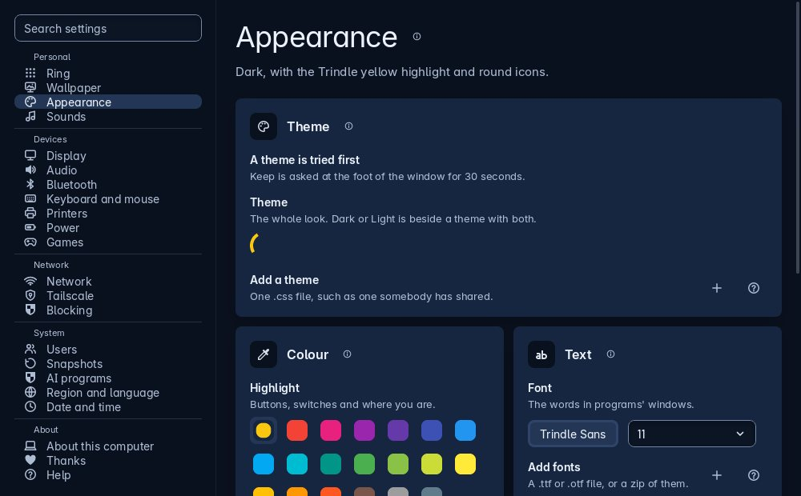
Settings: a list of pages down the side, and every setting on a full-width row of its own.
Settings is written in the same plain words as this site.
The computer right now
Activity opens from the middle of the ring, or from Settings, About this computer. One plain sentence at the top says what is going on: "All calm", or "Your computer is flat out: Steam and Firefox are using all 16 threads".
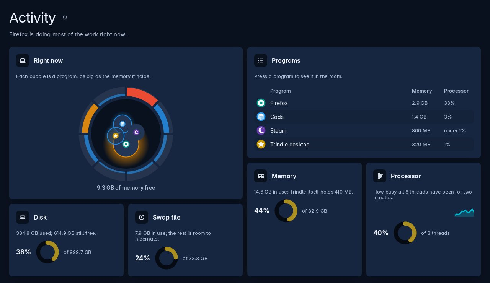
Activity: the room, the programs, and four rings.
The four rings
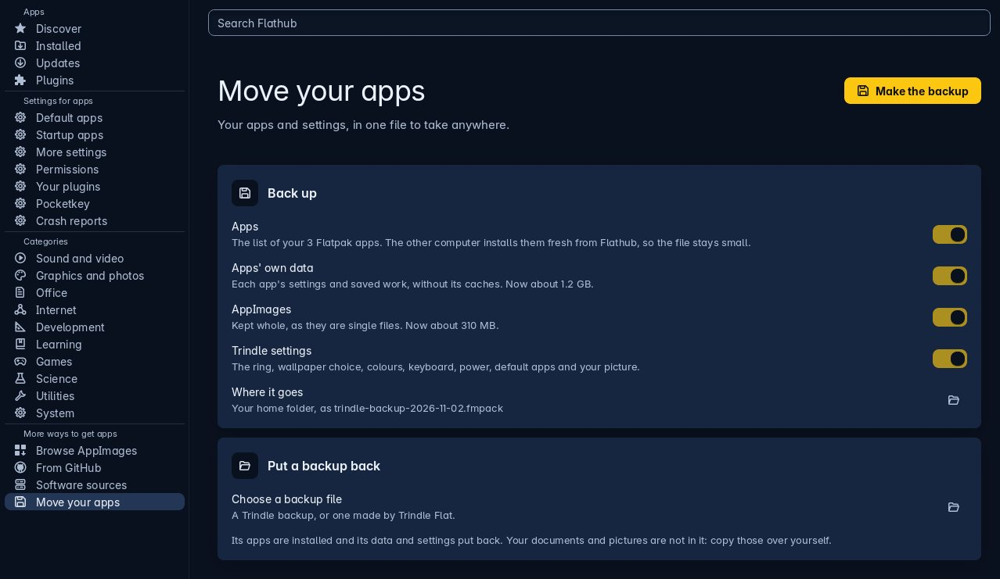
Apps: where apps come from down the left, and a search of Flathub at the top.
Where apps come from
Apps stays out of the way
Trindle does not choose your apps for you. There is no browser and no office suite waiting for you: a welcome screen at first login offers a page of common apps from Flathub, and you tick the ones you want.
Later, open Apps from its button in the middle of the ring. Updates are listed under Updates, and so is new firmware for the computer and its parts, such as a dock or a touchpad, when there is some: an update button, your password, and perhaps a restart. To remove an app, press the bin twice, or right-click it in the ring and choose Uninstall.
Light, dark, warm and sound
Three small things that decide how a desktop feels to sit in front of all day.
Light or dark
Dark to start with. In Settings, Appearance, choose Light when the screen is hard to see in bright sunshine, and Dark again later. Everything changes at once; apps installed from Apps change the next time they open.
The highlight colour is used for buttons, switches and wherever you are. Pick one of the twenty colours offered or type your own. The same page changes the font and the size of the pointer, and chooses the shape of the Trindle Icons: round, to begin with, or square. An app they do not draw gets an icon made to match.
Night light
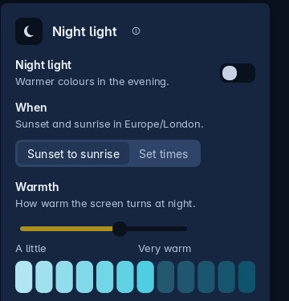
At the foot of Settings, Display. The screen turns warmer in the evening, with less of the blue light that keeps eyes awake, and back again in the morning.
It follows sunset and sunrise, worked out from your time zone, so nothing asks where you are. Or choose Set times to pick when it starts and ends, and move Warmth for a warmer screen.
Sounds
Each moment has its own sound: logging in; logging out, restarting and shutting down; the charger going in; the charger coming out; and the battery running low. Choose another from the list and it plays so you can hear it, or choose Off to keep that moment quiet.
Plugging the charger in or pulling it out also shows a card for a few seconds, so a lead that has slipped out gets noticed.
Seeing the screen better
Bigger where you need it, and light or dark to suit the room.
Two ways to it
Keys, if you want them
Everything can be done with the mouse. These are only quicker ways. Super is the key with the Windows sign on most keyboards.